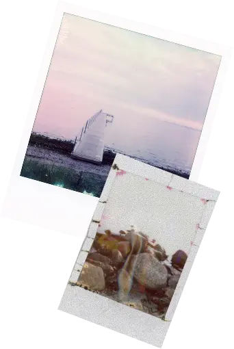
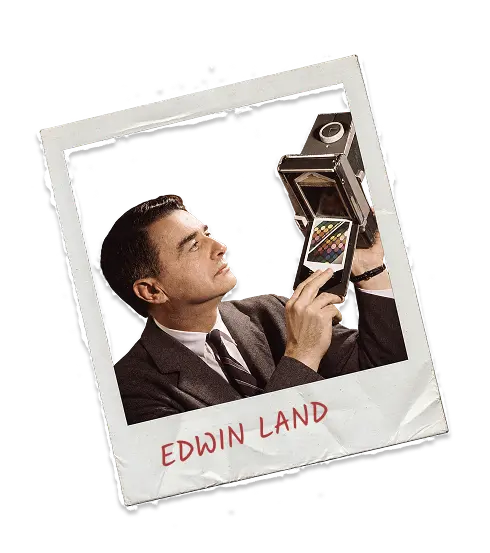
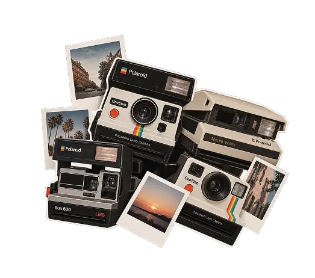
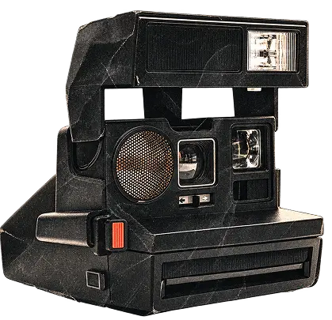
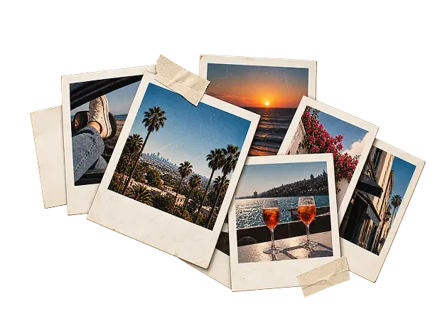
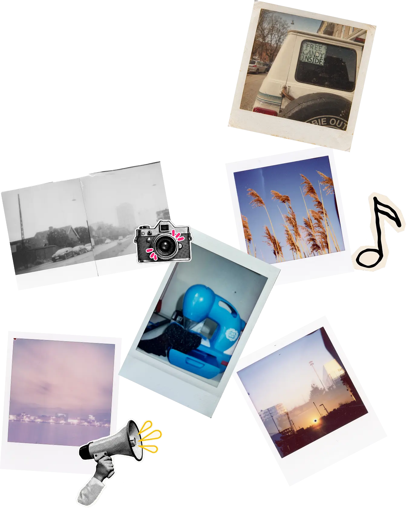
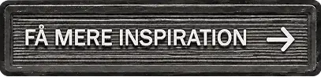

INSTANT
UGEN
En uge fyldt med Polaroid fotos
12-18 Okt. 2026

Hvad er INSTANT UGEN?
Kort fortalt er Instant Ugen en hyldest til instant-fotografering:
En opfordring til at udforske instant-fotografiets glæder.
Instant Ugen foregår to gange årligt:
I påsken og efteråret.
Så find dit Polaroid-, Instax- eller hvilket som helst andet instant-kamera, frem, og vis os dine instants. Instant Ugen er ikke rigtig en fotokonkurrence, det er mere en hyldest til god gammeldags analog instant-fotografering - alle, der deltager, er vindere
Men: Vi har en flot præmie til én heldig instant-fotograf!
Næste Instant Uge løber af staben i uge 14 - d. 30 marts til den 6. april 2026.

Hvorfor Instant ugen?

1948
Instant foto er et vidnesbyrd om livet. Det hele startede tilbage i 1940'erne.
Edwin Land fotograferede livets begivenheder, og en dag på stranden med sin 3-årige datter, gjorde hun opmærksom på, at hun ville se billederne med det samme!
Edwin satte sig selv en stor opgave: At opfinde en film, der kunne fremkalde sig selv. Hurtigt.
1978
Et halvt årti senere etablerede Edwin Land virksomheden Polaroid, som nu om dage nærmest er synonymt med instant foto.
Instant foto blev til en omfattende forretning i 70'erne og 80'erne.
Der blev solgt over 10 millioner instant kameraer


2001
Instant foto blev til en omfattende forretning i 70'erne og 80'erne, indtil den digitale æra næsten slog hele branchen ihjel.
Polaroid gik konkurs
Nu er instant foto stærkt på vej tilbage: Den enorme mængde tid spildt bag skærme har ansporet en modreaktion: Analog, offline oplevelser er blevet populære igen.
Og instant foto er netop dét: En analog, livsbekræftende og taktil fotooplevelse.

DET ANALOGE COMEBACK
Inspiration
Få inspiration fra kunstnere,
der arbejder kreativt med
instant fotografi.

